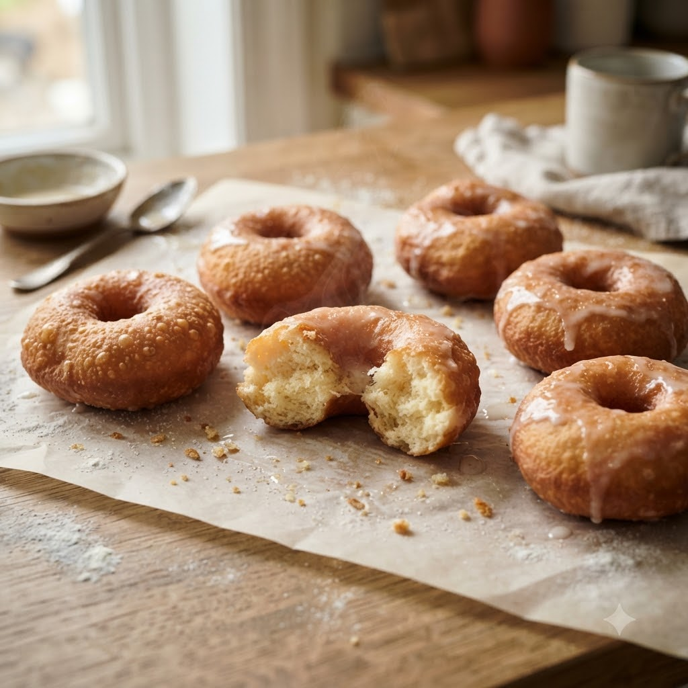

Air Fryer Doughnuts

Air Fryer Doughnuts
Airfryer – Bake 170°C 9 min makes 6
Ingredients
- 1.5 cups flour
- 2 tsp baking powder
- 1/4 cup sugar
- 1/2 tsp cinnamon (dalchini)
- 1/2 cup milk
- 1 egg
- 2 tbsp melted butter
- Extra butter and cinnamon (dalchini)-sugar for coating
Method
1Preheat: Preheat the Airfryer to 170°C for 4 minutes before adding the food to the basket.
2Mix flour, baking powder, sugar and cinnamon in a bowl.
3Whisk in milk, egg and melted butter to form a soft dough.
4Shape into small rings or balls and place in the basket, spaced apart.
5Bake at 170°C for 9 minutes until golden; brush with butter and roll in cinnamon-sugar while warm.